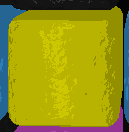
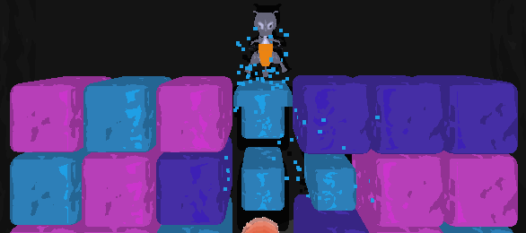
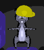
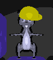

User's Guide
Controls
Drill toggle off controls (off by default)
↑ Drill above← Drill left
↓ Drill down
→ Drill right
A - Move left
D - Move right
Drill toggle on controls
W - Drill aboveA - Drill/Move left
S - Drill down
D - Drill/Move right
General controls
T - Toggle drill modesR - Reset the game
L - Reset the current level
Spacebar - Use Dynamite
Blocks
Dirt Blocks
Dirt Blocks are destroyed after being drilled once. There are three different colored dirt blocks.
Stone Blocks
Stone Blocks cannot be destroyed by drilling. They can only be destroyed by using Dynamite.
Sand Blocks
Sand Blocks can be destroyed by drilling once. They slow the squirrel when he walks over them.
Crystal Blocks
Crystal Blocks can be destroyed by drilling it 3 times.
Magma Blocks
Falling or walking on a Magma Block will result in a loss. They cannot be destroyed by drilling.
Connecting Blocks
When similar blocks touch, they stick to each other. 
Destroying a connected block will destroy all similar blocks connected to it.
Special Items
Nuts
Nuts grant points and energy.
Hard Hat
 
Hard Hats prevent the squirrel from falling blocks. A block will be destroyed if it falls on a squirrel that has a Hard Hat.
Dynamite

Dynamite destroys all adjacent blocks.